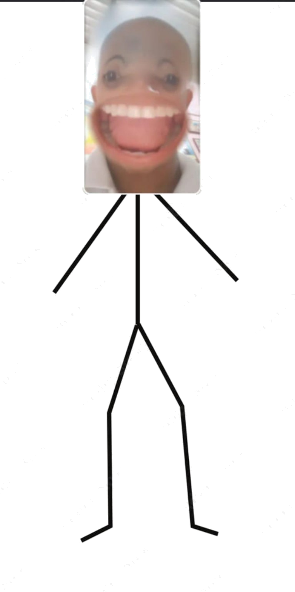
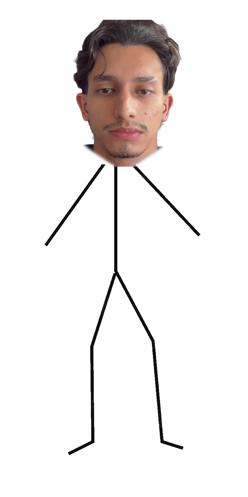

Leibniz × Spinoza
Dos formas de leer el mundo
Una conversación filosófica con sabor a Caribe: razón, libertad, alma y emociones.



Las preguntas que lo cambian todo
Dos inquietudes que separan —y unen— a dos grandes pensadores del racionalismo.
Spinoza y Leibniz tienen respuestas muy diferentes a esta cuestión fundamental.
Descubre cómo responde cada filósofoLa relación mente-cuerpo fue uno de los grandes debates de la filosofía moderna.
Explora la relación alma-cuerpoBenedictus de Spinoza
Una sola sustancia, una sola realidad: todo es Dios o la Naturaleza.
Benedictus de Spinoza
Pensador crítico de su época. Desarrolló una filosofía radical donde Dios y la Naturaleza son una misma cosa. Su obra central es la Ética, demostrada según el orden geométrico.
💡 Para decir en clase: "Spinoza entiende la realidad como una unidad y relaciona la libertad con comprender racionalmente las causas de nuestras acciones."
Gottfried Wilhelm Leibniz
Un universo de mónadas coordinadas en perfecta armonía.
Gottfried Wilhelm Leibniz
Filósofo, matemático y lógico. Trabajó sobre metafísica, conocimiento y religión. Sus obras principales incluyen el Discurso de metafísica, la Teodicea y sus trabajos sobre las unidades simples de percepción.
💡 Para decir en clase: "Leibniz explica la realidad mediante las mónadas y busca razones suficientes para comprender por qué las cosas son como son."
¿Qué ruta quieres explorar?
Sumérgete en los conceptos de un filósofo. Siempre puedes regresar y elegir la otra ruta.
🌿 Explorando a Spinoza
Spinoza nos invita a ver la realidad como una sola sustancia: Dios o la Naturaleza. Todo lo que existe es parte de esa sustancia única. No hay azar, no hay capricho: todo ocurre por causas necesarias.
La libertad no consiste en hacer lo que se quiera, sino en comprender las causas que nos determinan. Los afectos (alegría, tristeza, deseo) son variaciones de nuestra potencia de actuar, y comprenderlos racionalmente nos acerca a la verdadera libertad.
El conatus — el esfuerzo por perseverar en la existencia — es la fuerza fundamental de todo ser.
✨ Explorando a Leibniz
Leibniz explica la realidad mediante las mónadas: unidades simples, activas y dotadas de percepción. Cada mónada refleja el universo completo desde su perspectiva única.
Las mónadas no interactúan directamente entre sí, pero están coordinadas por una armonía preestablecida que Dios dispuso al crear el universo. Además, Leibniz sostiene que Dios elige el mejor de los mundos posibles.
Las pequeñas percepciones son procesos mentales diminutos que no llegan a la conciencia, anticipando ideas que la psicología exploraría siglos después.
Alma y cuerpo: dos miradas
¿El alma manda, o alma y cuerpo son dos expresiones de lo mismo?
✨ Leibniz
El alma es una unidad simple de percepción con sensaciones, memoria y, en los humanos, apercepción (conciencia reflexiva). Alma y cuerpo funcionan sincronizados gracias a la armonía preestablecida.
🌿 Spinoza
La mente es la idea del cuerpo: una misma realidad expresada de dos maneras. No hay separación real entre mente y cuerpo; son dos atributos de una misma sustancia.
¿Dónde queda la libertad?
Dos perspectivas racionalistas sobre lo que significa ser libre.
✨ Leibniz
Comprender nuestras percepciones y razones ayuda a actuar con mayor claridad. La libertad está relacionada con la acción racional y las razones que orientan nuestras elecciones.
🌿 Spinoza
Creemos ser libres cuando ignoramos las causas que nos determinan. La verdadera libertad consiste en comprender la necesidad y actuar racionalmente.
¿Qué significa ser libre?
Desliza para explorar el espectro de la libertad.
"No es hacer lo que dé la gana; es entender el compás y aprender a bailarlo."
¿Qué emoción se siente primero en el cuerpo?
Selecciona una emoción y descubre cómo la entendieron Spinoza y Leibniz.
Aportes a la Psicología
Dos visiones pioneras sobre la mente: la anatomía geométrica de los afectos y el descubrimiento del inconsciente perceptual.
Spinoza anticipa la psicología de las emociones: los estados mentales no son anomalías morales, sino procesos naturales regidos por causas necesarias.
Todo ser persevera intrínsecamente en su existencia (conatus). Cuando la potencia de actuar del cuerpo y de la mente aumenta, experimentamos alegría; cuando disminuye, sufrimos tristeza.
Los afectos primarios son deseo, alegría y tristeza. Todas las demás emociones (amor, odio, miedo, esperanza) son combinaciones de estos tres afectos básicos asociados a la idea de causas externas.
No nos liberamos reprimiendo las pasiones, sino comprendiendo sus causas con la razón. Un afecto negativo solo es superado por un afecto positivo más fuerte generado por el conocimiento lúcido.
Leibniz formula siglos antes que el psicoanálisis la existencia de procesos psíquicos inconscientes, basándose en la continuidad matemática de la mente.
Existen infinitas percepciones diminutas por debajo del umbral consciente. Como el murmullo de una ola: escuchamos el rugido total del mar porque integramos miles de ruidos diminutos de cada gota que no percibimos por separado.
Distingue entre percepción (el estado representativo interno) y apercepción (la conciencia reflexiva de dicha percepción, mediada por la memoria y la atención consciente).
La naturaleza no da saltos (lex continui). La mente nunca está en blanco total; la memoria garantiza la continuidad temporal y la identidad personal de la mónada a través de todos sus estados.
Duelo de ideas
🌿 Spinoza vs. ✨ Leibniz — Punto a punto.
¿En qué se parecen?
Ambos pertenecen a la tradición racionalista y dan gran importancia a la razón como herramienta para comprender la realidad. Aunque no explican la realidad de la misma manera, comparten la convicción de que el universo tiene un orden comprensible.
Cara a cara
Selecciona una pregunta y descubre cómo responde cada filósofo.
🌿 Spinoza
✨ Leibniz
Mapa del recorrido
Navega entre las ideas. Pulsa al viajero para escuchar una explicación.
Quiz filosófico
Demuestra cuánto aprendiste sobre Spinoza y Leibniz.
¿Listo para poner a prueba tus conocimientos?
¿Spinoza o Leibniz?
Lee la afirmación y decide a quién pertenece.
¿Puedes identificar a cada filósofo por sus ideas?
Créditos y Bibliografía
Presentación interactiva para la cátedra de Filosofía Moderna · Semestre Académico 2026
Historia de la Filosofía Moderna
Unidad: El Racionalismo Continental en el Siglo XVII
Equipo Expositor
-
1[Nombre del Integrante 1 — Editable] Metafísica de Spinoza, Sustancia Única y Deus sive Natura
-
2[Nombre del Integrante 2 — Editable] Monadología de Leibniz, Armonía Preestablecida y Razón Suficiente
-
3[Nombre del Integrante 3 — Editable] Libertad, Dinámica de los Afectos y Aportes a la Psicología